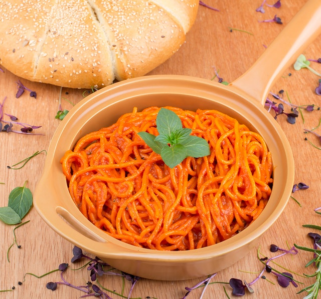

TALLARINES CON POLLO

Ingredientes:
6 presas pollo con piel
3 cebollas en cuadritos
2 cucharadas ajos molidos
1 cucharada aji panca
3 cucharadas colmadas pasta de tomate
5 hongos
5 hojas lauerl
Sal,pimienta,comino
1 litro agua o caldo de pollo(pueden remplazarlo con un cubito
Aceite vegetal
4 cucharas azucar
1 taza vino tinto